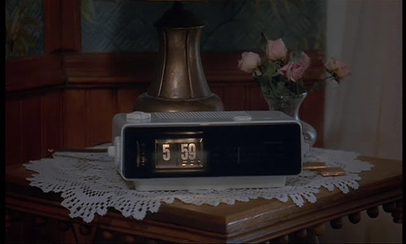
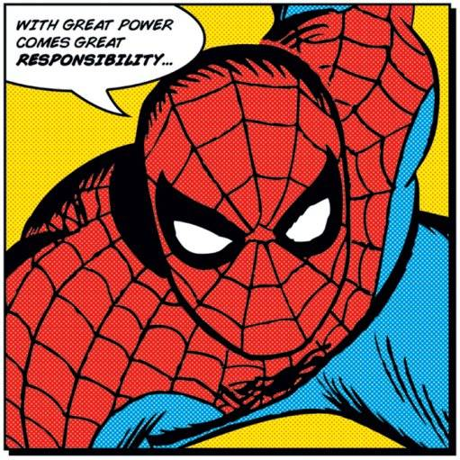

A little bit about me

Release Cycle Times in Months

Deploying Like It's 1999
Spend time writing code
Merge it, probably several times
Hand it over to someone to deploy
Try and roll back the deploy
Start again

... reduce cycle time, the time it takes from deciding to make a change ... to having it available to users.
- Jez Humble and David Farley 2006
Our highest priority is to satisfy the customer through early and continuous delivery of valuable software. - Agile Manifesto 2001 AD
The Principles of Continuous Deployment

repeatable and reliable

Automate everything
If it hurts do it more often

Keep everything in source control
measure, measure, measure

Everybody is responsible for the release process
Continuously improve
The Deployment Pipeline
A deployment pipeline is, in essence, an automated implementation of your application's build, deploy, test and release process
- Jez Humble and David Farley 2006
Our (Server) Deployment Pipeline
Commit > Acceptance > Publish > Smoke
Pipeline - Thoughtworks Go
Commit > Acceptance > Publish > Smoke
Unit Tests: mocha and jasmine
Quality Checks: jshint
100% Coverage: istanbul
Commit > Acceptance > Publish > Smoke
Performance Tests: mocha
Database Tests: mocha
Commit > Acceptance > Publish > Smoke
Deploys Code: ec2-each
Checks Running Versions: ec2-each
Commit > Acceptance > Publish > Smoke
Web Service Testing: mocha and request
User Interface Testing: casperjs
Things I've Learnt Along The Way
Take the first step
Feature toggles
Chaos Monkey
Pre-commit hooks

So why have I learned to stop worrying and love the failed build ?
Let's push to master, and go to lunch whilst it deploys to production
- Roy Lines 2014